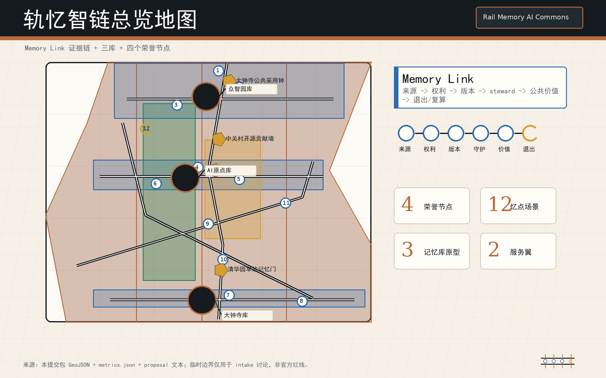
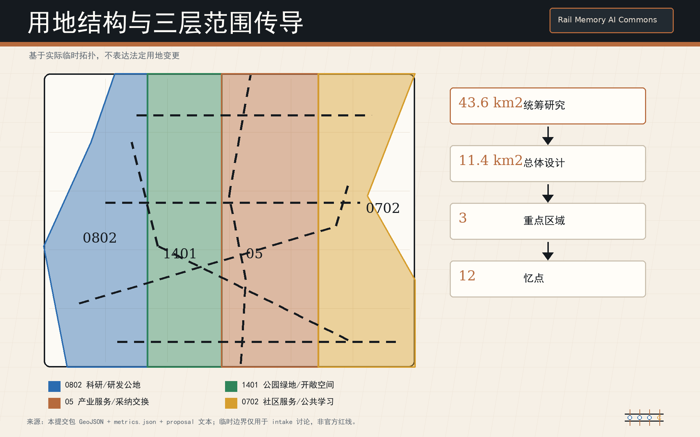
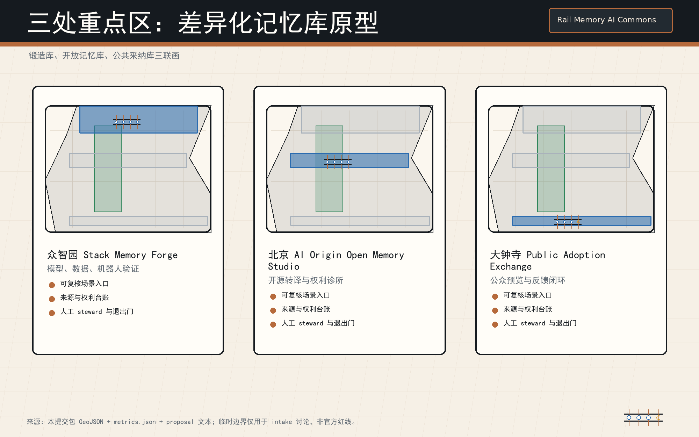
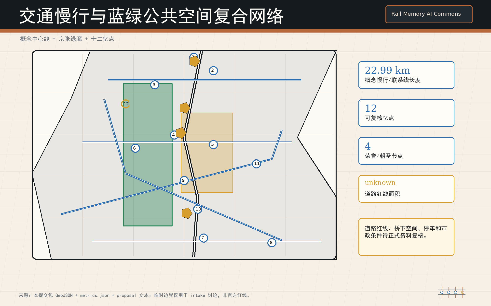
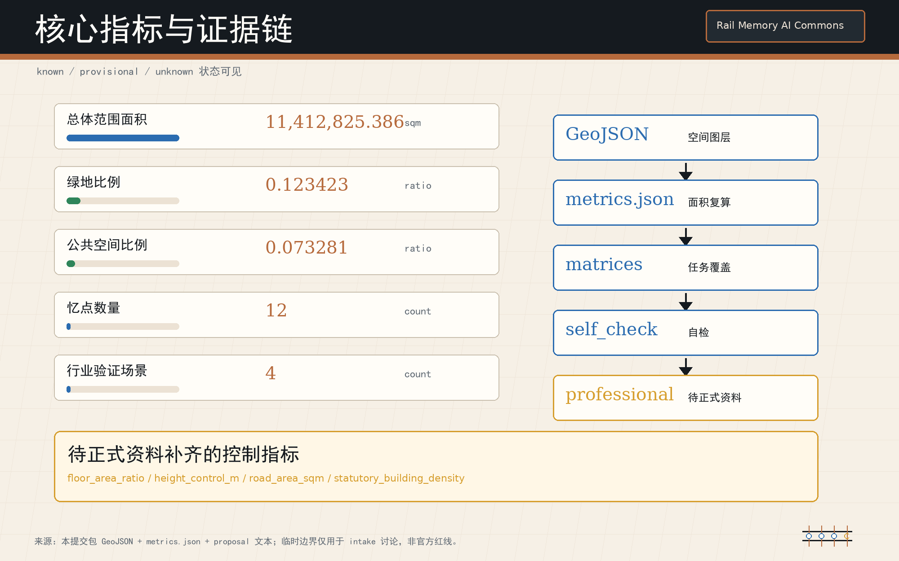

来源
来源：本提交包 GeoJSON、metrics.json、proposal、矩阵、自检结果；无远程资产、脚本、表单、iframe 或跟踪。
offline package假设
假设：当前边界与重点区为临时约束；控规、道路红线、权属、市政、文保、消防和工程条件待正式资料补齐。
provisional boundary让每一次智能进入城市，都留下可复核的公共记忆。





来源：本提交包 GeoJSON、metrics.json、proposal、矩阵、自检结果；无远程资产、脚本、表单、iframe 或跟踪。
offline package假设：当前边界与重点区为临时约束；控规、道路红线、权属、市政、文保、消防和工程条件待正式资料补齐。
provisional boundary